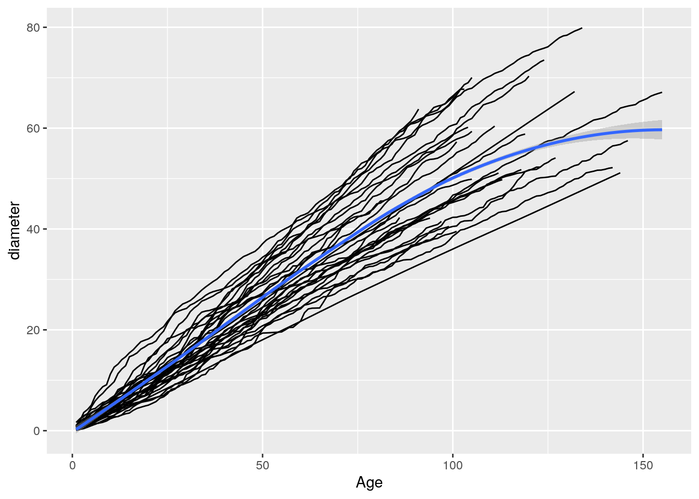

Lecture 5 Data wrangling
Data is rarely in a format that is good for computing, and much effort goes into reading the data and wrestling with it to make it into a good format. As the name implies, tidyverse strongly advocates for the use of data in tidy form. What does this mean?
- Each variable forms a column
- Each observation forms a row
- Each type of observational unit forms a table
This is often called narrow table format. Any other form of data (e.g., wide table format) is considered messy. However, often data are not organized in tidy form, or we want to produce tables for human consumption rather than computer consumption. The package tidyr allows to accomplish just that. It contains only a few, very powerful functions. To explore this issue, we build a data set containing the average body mass by species and sex:
penguin_bm <- penguins %>%
drop_na() %>%
group_by(sex, species) %>%
summarise(body_mass = mean(body_mass_g)) %>%
ungroup() # remove group information
penguin_bm## # A tibble: 6 x 3
## sex species body_mass
## <fct> <fct> <dbl>
## 1 female Adelie 3369.
## 2 female Chinstrap 3527.
## 3 female Gentoo 4680.
## 4 male Adelie 4043.
## 5 male Chinstrap 3939.
## 6 male Gentoo 5485.5.1 From narrow to wide
Our data is in tidy form. For a paper, we want to show the difference between males and females in a table:
## # A tibble: 3 x 3
## species female male
## <fct> <dbl> <dbl>
## 1 Adelie 3369. 4043.
## 2 Chinstrap 3527. 3939.
## 3 Gentoo 4680. 5485.where we have created new column names using the values found in sex (hence, names_from), and filled each cell with the corresponding value found in body_mass (hence, values_from). Similarly, if we want to show the data with species as column names, and sex as rows, we can use:
## # A tibble: 2 x 4
## sex Adelie Chinstrap Gentoo
## <fct> <dbl> <dbl> <dbl>
## 1 female 3369. 3527. 4680.
## 2 male 4043. 3939. 5485.5.2 From wide to narrow
For a real-world example, we will make data from:
Tree-ring analysis for sustainable harvest of Millettia stuhlmannii in Mozambique, I.A.D.Remane M.D.Therrell, South African Journal of Botany Volume 125, September 2019, Pages 120-125
You can read a tab-separated file from:
## Parsed with column specification:
## cols(
## .default = col_double(),
## X38 = col_logical(),
## X39 = col_logical(),
## X40 = col_logical(),
## X41 = col_logical(),
## X42 = col_logical(),
## X43 = col_logical(),
## X44 = col_logical(),
## X45 = col_logical(),
## X46 = col_logical(),
## X47 = col_logical(),
## X48 = col_logical(),
## X49 = col_logical(),
## X50 = col_logical(),
## X51 = col_logical(),
## X52 = col_logical(),
## X53 = col_logical(),
## X54 = col_logical(),
## X55 = col_logical()
## )## See spec(...) for full column specifications.Each column besides Age represents a single tree, and each cell contains the diameter (in cm) of the tree when it was at a given age. To make this in tidy form, we first create the columns tree and diameter:
and then remove the NAs:
Now it is easy to plot the growth trajectory of each tree (as in Fig. 3 of the original paper):
dt %>%
ggplot() +
aes(x = Age, y = diameter) +
geom_line(aes(group = tree)) + # note---this makes a line for each tree
geom_smooth(method = "loess") # while the smoothing function considers all trees## `geom_smooth()` using formula 'y ~ x'
5.3 Separate: split a column into two or more
## # A tibble: 3 x 1
## name
## <chr>
## 1 Allesina, Stefano
## 2 Kondrashov, Dmitry
## 3 Smith, Julia## # A tibble: 3 x 2
## last_name first_name
## <chr> <chr>
## 1 Allesina Stefano
## 2 Kondrashov Dmitry
## 3 Smith JuliaThe complement of separate is called unite.
5.4 Separate rows: from one row to many
## # A tibble: 4 x 2
## id records
## <dbl> <chr>
## 1 1 a;b;c
## 2 2 c;d
## 3 3 a;e
## 4 4 fTo make it into tidy form, only one record per row:
## # A tibble: 8 x 2
## id records
## <dbl> <chr>
## 1 1 a
## 2 1 b
## 3 1 c
## 4 2 c
## 5 2 d
## 6 3 a
## 7 3 e
## 8 4 f5.5 Example: brown bear, brown bear, what do you see?
This exercise uses a dataset from GBIF, the Global Biodiversity Information Facility. You can download the latest version yourself by doing the following (but just skip ahead if you want to use the data provided by us).
- Go to GBIF and click on Occurrences.
- Under Scientific Name type in Ursus arctos (brown bear), and hit enter.
- To download the data, create an account on GBIF
- Then click on Download, and select Simple (which should have a tab-delimited .csv file)
- Save to the data folder in your working folder.
If you don’t want to go through all this, you can use the downloaded file called Ursus_GBIF.csv that should be in the data folder for this week. The following command loads and displays the contents of the tibble:
# you will need ggmap!
library(ggmap)
Ursus_data <- read_tsv("data/Ursus_GBIF.csv")
glimpse(Ursus_data)## Rows: 23,498
## Columns: 50
## $ gbifID <dbl> 2382421192, 2382420986, 2382420916, …
## $ datasetKey <chr> "88d8974c-f762-11e1-a439-00145eb45e9…
## $ occurrenceID <chr> "http://arctos.database.museum/guid/…
## $ kingdom <chr> "Animalia", "Animalia", "Animalia", …
## $ phylum <chr> "Chordata", "Chordata", "Chordata", …
## $ class <chr> "Mammalia", "Mammalia", "Mammalia", …
## $ order <chr> "Carnivora", "Carnivora", "Carnivora…
## $ family <chr> "Ursidae", "Ursidae", "Ursidae", "Ur…
## $ genus <chr> "Ursus", "Ursus", "Ursus", "Ursus", …
## $ species <chr> "Ursus arctos", "Ursus arctos", "Urs…
## $ infraspecificEpithet <chr> NA, NA, NA, "horribilis", NA, NA, NA…
## $ taxonRank <chr> "SPECIES", "SPECIES", "SPECIES", "SU…
## $ scientificName <chr> "Ursus arctos Linnaeus, 1758", "Ursu…
## $ verbatimScientificName <chr> "Ursus arctos", "Ursus arctos", "Urs…
## $ verbatimScientificNameAuthorship <chr> NA, NA, NA, NA, NA, NA, NA, NA, NA, …
## $ countryCode <chr> NA, "US", NA, NA, "US", NA, NA, "US"…
## $ locality <chr> "no specific locality recorded", "no…
## $ stateProvince <chr> NA, "Alaska", NA, NA, "Colorado", NA…
## $ occurrenceStatus <chr> NA, NA, NA, NA, NA, NA, NA, NA, NA, …
## $ individualCount <dbl> 1, 1, 1, 1, 1, 1, 1, 1, 1, 1, 1, 1, …
## $ publishingOrgKey <chr> "4cadac10-3e7b-11d9-8439-b8a03c50a86…
## $ decimalLatitude <dbl> NA, NA, NA, NA, NA, NA, NA, NA, NA, …
## $ decimalLongitude <dbl> NA, NA, NA, NA, NA, NA, NA, NA, NA, …
## $ coordinateUncertaintyInMeters <dbl> NA, NA, NA, NA, NA, NA, NA, NA, NA, …
## $ coordinatePrecision <dbl> NA, NA, NA, NA, NA, NA, NA, NA, NA, …
## $ elevation <dbl> NA, NA, NA, NA, NA, NA, NA, NA, NA, …
## $ elevationAccuracy <dbl> NA, NA, NA, NA, NA, NA, NA, NA, NA, …
## $ depth <lgl> NA, NA, NA, NA, NA, NA, NA, NA, NA, …
## $ depthAccuracy <lgl> NA, NA, NA, NA, NA, NA, NA, NA, NA, …
## $ eventDate <dttm> 1800-01-01, 1800-01-01, 1800-01-01,…
## $ day <dbl> 1, 1, 1, 1, 1, 1, 1, 1, 1, 1, 1, 1, …
## $ month <dbl> 1, 1, 1, 1, 1, 3, 1, 1, 1, 1, 1, 1, …
## $ year <dbl> 1800, 1800, 1800, 1800, 1914, 1938, …
## $ taxonKey <dbl> 2433433, 2433433, 2433433, 6163845, …
## $ speciesKey <dbl> 2433433, 2433433, 2433433, 2433433, …
## $ basisOfRecord <chr> "PRESERVED_SPECIMEN", "PRESERVED_SPE…
## $ institutionCode <chr> "UCM", "UCM", "UCM", "UCM", "UCM", "…
## $ collectionCode <chr> "Mammal specimens", "Mammal specimen…
## $ catalogNumber <chr> "UCM:Mamm:5003", "UCM:Mamm:3329", "U…
## $ recordNumber <lgl> NA, NA, NA, NA, NA, NA, NA, NA, NA, …
## $ identifiedBy <chr> "T. C. Hart", "unknown", "unknown", …
## $ dateIdentified <dttm> 2013-01-01, 1936-01-01, NA, 2015-10…
## $ license <chr> "CC0_1_0", "CC0_1_0", "CC0_1_0", "CC…
## $ rightsHolder <chr> NA, NA, NA, NA, NA, NA, NA, NA, NA, …
## $ recordedBy <chr> "Collector(s): T. C. Hart", "Collect…
## $ typeStatus <lgl> NA, NA, NA, NA, NA, NA, NA, NA, NA, …
## $ establishmentMeans <chr> NA, NA, NA, NA, NA, NA, "MANAGED", N…
## $ lastInterpreted <dttm> 2019-09-03 22:11:14, 2019-09-03 22:…
## $ mediaType <chr> NA, NA, NA, NA, NA, NA, NA, NA, NA, …
## $ issue <chr> NA, NA, NA, NA, "TAXON_MATCH_HIGHERR…You see there are 50 variables in the data set, so it may be useful to remove the ones we don’t need. For this exercise, our objective is to plot the occurrences of this species on the world map, so we need two variables for certain: decimalLatitude and decimalLongitude, as well as the BasisofRecord for additional information. Use your tidyverse skills to create a new tibble with only those variables. In addition, remove duplicate records from the tibble.
Now we can plot this data set on the world map, using the useful package maps. To plot, use the ggplot() syntax with the following addition:
mapWorld <- borders("world", colour="gray50", fill="gray50") # create a layer of borders
# now you can call
# ggplot() + mapWorld + ...Note the warning message generated by ggplot. Then consider the map with the locations of the brown bear specimens. Do any of them seem strange to you? What may be the explanation behind these strange data point? Now filter out the points that you identified as suspicious and print out their BasisofRecord. Does this suggest an explanation for the strangeness?